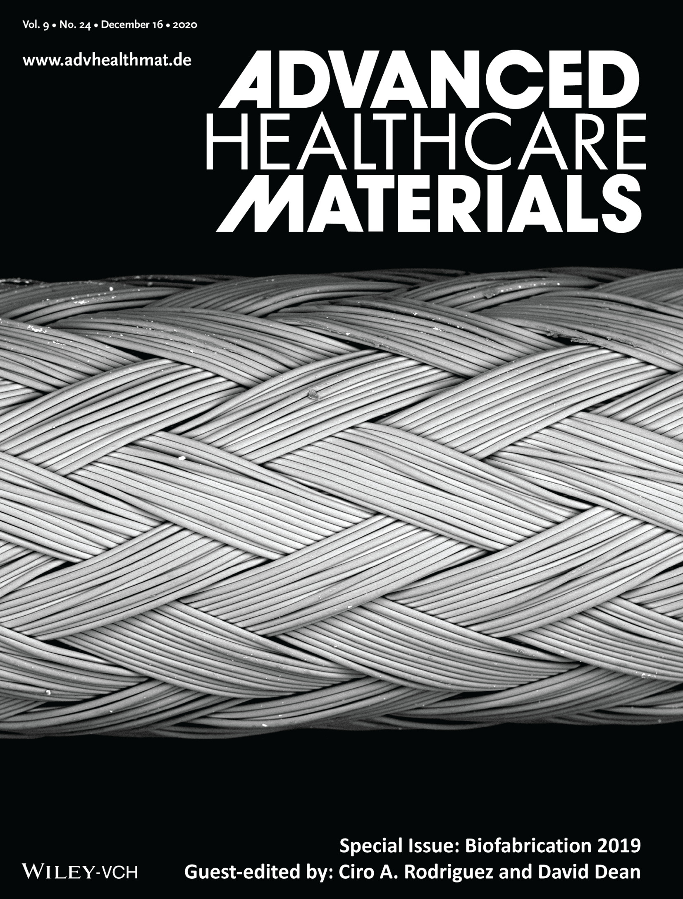
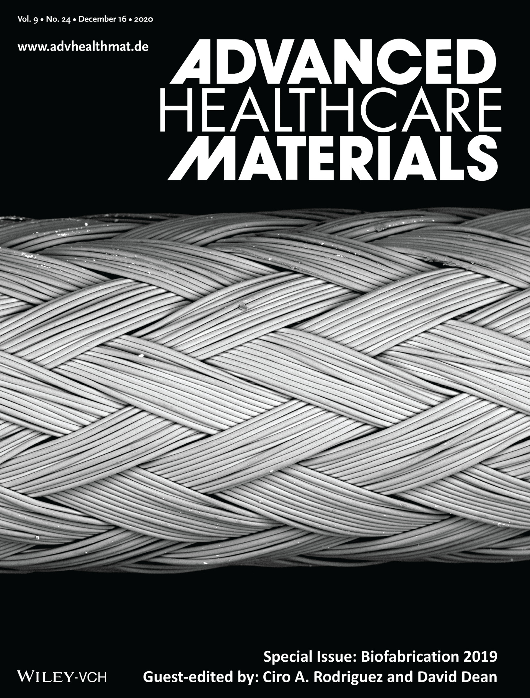

Current Position: Assistant Professor, Department of Mechanical Engineering, Iowa State University
Research Interests:
Research Interests:
- Biomechanics
- Computational Mechanics
- Vascular Biology
- Tissue Engineering
- Cardiovascular
- Translational
Journal Covers

 


- A.B. Ramachandra , B. Jiang, I. Jennings, E. P. Manning and J. D. Humphrey, (2024), Remodeling of murine branch pulmonary arteries under chronic hypoxia and short-term normoxic recovery, Journal of Biomechanical Engineering, in print.
- A. B. Ramachandra*, C. Cavinato*, and J. D. Humphrey, (2024), A systematic comparison of normal structure and function of greater thoracic vessels involved in single ventricle repair, Annals of Biomedical Engineering, 1:9.
- M. Salarian, M. Ghim, J. Toczek, J. Han, D. Weiss, B. Spronck, A. B. Ramachandra, J.-J. Jung, G. Kukreja, J. Zhang, D. Lakerheram, S.- K. Kim, J. D. Humphrey, and M. M. Sadeghi, (2023), Homeostatic, non-canonical role of macrophage elastase in vascular integrity, Circulation Research, 132:432–448.
- S-I. Murtada*, A. B. Ramachandra*, and J. D. Humphrey, (2023), Ex Vivo Biomechanical Assessment of Umbilical Vessels as Possible Shunts in Congenital Heart Palliation, accepted, Journal of Biomechanics, 151, 111518.
- S-I. Murtada, N. Mikush, M. Wang, P. Ren, Y. Kawamura, A.B. Ramachandra, D. S. Li, D.T. Braddock, G. Tellides, L.B. Gordon, and J.D. Humphrey, (2023), Lonafarnib improves cardiovascular function and survival in a mouse model of Hutchinson-Gilford Progeria Syndrome , Elife, 12: e82728.
- S-I. Murtada, Y. Kawamura, C. Cavinato, M. Wang, A.B. Ramachandra, B. Spronck, D. S. Li, G. Tellides, and J.D. Humphrey, (2023), Biomechanical and transcriptional evidence that smooth muscle cell death drives an osteochondrogenic phenotype and severe proximal vascular disease in progeria, Biomechanics and Modeling in Mechanobiology, 1-15.
- E. Ban, P-D. Kalogerakos, R. Khosravi, B. A. Ziganshin, H. Ellauzi, A. B. Ramachandra , M.A. Zafar, J. D. Humphrey, and J. A. Elefteriades, (2023), Extended law of laplace for measurement of the cloverleaf anatomy of the aortic root , The International Journal of Cardiovascular Imaging, 1-12.
- A. Greaney, A. B. Ramachandra, Y. Yuan, A.Korneva, J. D. Humphrey, and L. Niklason, (2023), Decellularization compromises mechanical and structural properties of the native trachea, Biomaterials and Biosystems, 100074.
- A. B. Ramachandra*, H. Wang*, A. Wnorowski*, et. al., (2022), Biodegradable external wrapping promotes favorable adaptation in an ovine vein graft model, Acta Biomaterialia, 151, pp.414-425
- B. Spronck, A. B. Ramachandra , L. Moriyama, J. Toczek, J. Han, M. M. Sadeghi, and J. D. Humphrey, Deletion of matrix metalloproteinase-12 compromises mechanical homeostasis and leads to an aged aortic phenotype in young mice, Journal of Biomechanics, 111179.
- A. B. Ramachandra, N. Guerrera, M. Sauler, J. D. Humphrey, and E. Manning, (2022), Compromised Cardiopulmonary function in Fibulin-5 Deficient Mice, Journal of Biomechanical Engineering, 144.8: 081008.
- K. M. Blum ∗ , J. C. Zbinden ∗ , A. B. Ramachandra∗, S. E. Lindsey ∗ , J. M. Szafron ∗ , et al. (2022), Tissue Engineered Vascular Grafts Transform into Autologous Neovessels Capable of Native Function and Growth, Communications Medicine, 2, 3.
- M. Latorre, J. Szafron, A. B. Ramachandra, and J. D. Humphrey, (2022), In Vivo Development of Tissue Engineered Vascular Grafts: A Fluid-Solid-Growth Model, Biomechanics and Modeling in Mechanobiology, 1-22.
- J. Seo *, A.B. Ramachandra*, J. Boyd, A.L. Marsden, & A.M. Kahn, (2021), Computational Evaluation of Venous Graft Geometries in Coronary Artery Bypass Surgery, Seminars in Thoracic and Cardiovascular Surgery, in press
- E. P. Manning, A. B. Ramachandra, J. C. Schupp, C. Cavinato, M. S. Brickman Raredon, T. Bärnthaler, C. Cosme, I. Singh, N. Kaminski, and J. D. Humphrey, (2021), Novel Mechanisms of Pulmonary Arterial Stiffening in Mice due to Hypoxia Using a Functional Genetics Assay of Structural, Functional, and Transcriptomic Data, Frontiers in Physiology, 12.
- B. Spronck, M. Latorre, M. Wang, S. Mehta, A. Caulk, P. Ren, A.B. Ramachandra, S. Murtada, A. Rojas, C. He, B. Jiang, M. Bersi, G. Tellides, J. D. Humphrey, (2021), Excessive adventitial stress drives inflammation-mediated fibrosis in hypertensive aortic remodelling in mice, Journal of the Royal Society Interface, 18.180: 20210336.
- E. Schwarz, J. Kelly, K. Blum, K. Hor, A. Yates, J. Zbinden, A. Verma, S. Lindsey, A. B. Ramachandra, J. Szafron, J. D. Humphrey, T. Shinoka, A. L. Marsden, C. K. Breuer, (2021), Hemodynamic performance of tissue-engineered vascular grafts in Fontan patients, npj Regenerative Medicine, 6.1: 1-17.
- D. Weiss, C. Cavinato, A. Gray, A. B. Ramachandra, S. Avril, J. D. Humphrey, M.L. Latorre, (2020), Mechanics-Driven Mechanobiological Mechanisms of Arterial Tortuosity, Science Advances, 6.49, eabd3574.
- J. Zbinden, K. Blum, A.G. Berman, A. B. Ramachandra, J.M. Szafron, K. Kerr, J. L. Anderson, G. S. Sangha, C. C. Earl, N. R. Nigh, G. Mirhaidari, J. Reinhardt, Y. Chang, T. Yi, R. Smalley, P. Gabriele, J.J. Harris, J. D. Humphrey, C. J. Goergen, C.K. Breuer, (2020), Effects of Braiding Parameters on Tissue Engineered Vascular Graft Development, Advanced Healthcare Materials, 2001093.
- H. Bai, N. Sadaghianloo, J. Gorecka, S. Liu, S. Ono, A. B. Ramachandra, S. Bonnet, N. M. Mazure, S. Declemy, J. D. Humphrey, A. Dardik, (2020), Artery to vein configuration of arteriovenous fistula improves hemodynamics to increase maturation and patency, Science Translational Medicine, 12(557).
- A. B. Ramachandra, M. Latorre, J. M. Szafron, A. L. Marsden, and J. D. Humphrey, (2020), Vascular Adaptation in the Presence of External Support - A Modeling Study, Journal of the Mechanical Behavior of Biomedical Materials, 110, 103943
- J. D. Drews, V. K. Pepper, C. A. Best, J. M. Szafron, J. P. Cheatham, A. R. Yates., K. N. Hor, J. C. Zbinden, Y. C. Chang, G. J. Mirhaidari, A. B. Ramachandra, et. al., (2020), Spontaneous reversal of stenosis in tissue-engineered vascular grafts, Science Translational Medicine, 12(537).
- R. Khosravi*, A. B. Ramachandra*, J. M. Szafron, D. E. Schiavazzi, C.K. Breuer, & J. D. Humphrey, (2020), A computational bio-chemo-mechanical model of in vivo tissue-engineered vascular graft development, Integrative Biology, 12(3), 47-63
- J. M. Szafron, A. B. Ramachandra, C. K. Breuer, A. L. Marsden, & J. D. Humphrey, (2019), Optimization of Tissue Engineered Vascular Graft Design Using Computational Modeling, Tissue Engineering C: Methods, 25.10, 561-570, 2019
- A. B. Ramachandra, & J.D. Humphrey, (2018), Biomechanical characterization of murine pulmonary arteries, Journal of Biomechanics., 84, 18-26
- A. B. Ramachandra, J. D. Humphrey, & A. L. Marsden, (2017), Gradual loading ameliorates maladaptation in computational simulations of vein graft growth and remodelling, Journal of The Royal Society Interface, 14(130), 20160995.
- J. S. Tran, D. E. Schiavazzi, A. B. Ramachandra, A. M. Kahn, & A. L. Marsden, (2017), Automated tuning for parameter identification and uncertainty quantification in multi-scale coronary simulations, Computers & Fluids, 142, 128-138.
- A. B. Ramachandra, A.M. Kahn, & A. L. Marsden, (2016), Patient-specific simulations reveal significant differences in mechanical stimuli in venous and arterial coronary grafts, Journal of Cardiovascular Translational Research, 9(4), 279-290.
- A. B. Ramachandra, S. Sankaran, J. D. Humphrey, & A. L. Marsden, (2015), Computational simulation of the adaptive capacity of vein grafts in response to increased pressure, Journal of Biomechanical Engineering, 137(3), 031009.
Submitted/Under Review/Preprint
- A. Giudici, J. M. Szafron, A. B. Ramachandra, B. Spronck, Instability in computational models of vascular smooth muscle cell contraction, under revision.
Instructor
- ME345 - Engineering Dynamics, Iowa State University, Fall 2023 and Spring 2024
- MAE107, Numerical Methods- undergraduate class, University of California San Diego, Spring 2013
- BENG276, Numerical Analysis for Multiscale Biology- graduate class, University of California San Diego, Winter 2015
- MAE261, Cardiovascular Fluid Mechanics- graduate class, University of California San Diego, Winter 2015
- MAE107, Numerical Methods- undergraduate class, University of California San Diego, Spring 2013
- MAE261, Cardiovascular Fluid Mechanics- graduate class, University of California San Diego
- ME/CME/BIOE 285, Computational Modeling in the Cardiovascular System- graduate class, Stanford University, Spring 2016
- BENG205, Discovery and Design- undergraduate class, Yale University, Fall 2017, 2018, 2019, 2020
- 21-369, Numerical Methods - Carnegie Mellon University, Spring 2010
- Introduction to Statics and Dynamics, Andy Ruina and Rudra Pratap, Oxford University Press (Preprint)
- Getting Started with MATLAB: A Quick Introduction for Scientists and Engineers, Rudra Pratap, Oxford University Press
- Journals- Acta Biomaterialia, PLOS ONE, PLOS Computational Biology, Scientific Reports, Annals of Anatomy, The Journal of Physiology, Journal of Biomechanics, Journal of Hypertension, Biomechanics and Modeling in Mechanobiology, Journal of Biomechanical Engineering.
- Conference - Summer Biomechanics, Bioengineering, and Biotransport Conference, Biomedical Engineering Society Annual Meeting.
Resources
Featured
- Illustrative patient-specific coronary bypass graft simulation from my Ph. D. thesis on the SIAM Youtube channel.